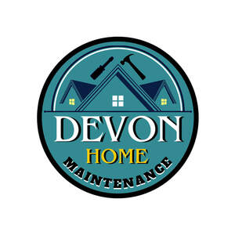

Trade Mark Journal No.2026/005 30 January 2026
UK00004322165 11 January 2026 (37)

- Class 37
- Home, house, properties maintenance ; Maintenance of property; Property maintenance; Maintenance and repair of residential buildings; Construction of residential properties; Maintenance and repair of office buildings; Maintenance and repair of utilities in buildings; Maintenance of buildings; Rental of tools, plant and equipment for construction, demolition, cleaning and maintenance; Maintenance and repair of buildings; Building maintenance; Maintenance and repair of building contents; Maintenance and repair of land vehicles; Cleaning of property; Repair and maintenance of land vehicles; Building maintenance and repair; Repair or maintenance of building equipment; Garage services for vehicle maintenance; Building of commercial properties; Furniture maintenance; Maintenance, servicing and repair of household and kitchen appliances; Office equipment maintenance; Building of industrial properties; Rental and maintenance of work platforms; Furniture maintenance and repair; Maintenance and repair of furniture; Property development services [construction]; Renovation of property; Rental of vehicle maintenance equipment; Vehicle maintenance equipment (Rental of -); Maintenance and repair of garden tools; Maintenance and repair of road making equipment; Services for the maintenance of windows in vehicles; Maintenance and repair of heating installations; Maintenance services for industrial plants; Maintenance and repair of yachts; Maintenance and repair of cooling appliances and installations; Pest control for residential homes; Maintenance and repair of heating; Repair or maintenance of mechanical parking systems; Construction of property; Maintenance and repair of flooring; Car maintenance; Floor maintenance services; Maintenance and repair of storage installations; Maintenance and repair of security systems; Computer maintenance services; Repair and maintenance of buildings in case of demolition; Furniture restoration, repair and maintenance; Garage services for the maintenance and repair of motor vehicles; Repair or maintenance of office machines and equipment; Maintenance of commercial electrical systems; Maintenance and repair of strong rooms; Installation, maintenance and repair of kitchen equipment; Maintenance and repair of motor land vehicles; Providing information relating to the construction, repair and maintenance of buildings; Services for the maintenance of computers; Repair or maintenance of chemical plants; Maintenance and repair of physical access control; Installation, repair and maintenance of heating equipment; Machinery maintenance services; Repair or maintenance of veterinary installations; Maintenance and repair services relating to automatic door equipment; Maintenance and repair of camping equipment; Safe maintenance or repair; Safe maintenance and repair; Office machines and equipment installation, maintenance and repair; Installation, maintenance and repair of office machines and equipment; Maintenance and repair of security installations; Maintenance and repair of parts and fittings for buildings; Vehicles maintenance and repair; Maintenance and repair of vehicles; Maintenance and repair of access control systems; Maintenance and repair of water vehicles; Repair and maintenance of vehicles; Services for the maintenance of strong rooms; Maintenance and repair of road making machines; Maintenance and repair of solar heating installations; Cleaning of residential houses; Maintenance and repair of transport containers; Maintenance of vehicles; Maintenance and repair of pipes used in industrial equipment; Building maintenance and repair services provided by a handyman; Computer installation and maintenance services; Maintenance of vehicle washing installations; Renovation, repair and maintenance of electrical wiring; Maintenance and repair of geothermal installations; Vehicle maintenance; Maintenance (Vehicle -); Repair or maintenance of computers; Maintenance and repair of computers; Maintenance of plumbing; Maintenance, servicing and repair of vehicles; Maintenance, servicing and repair of weapon systems; Maintenance and repair of toys; Vehicle maintenance and repair; Vehicle repair and maintenance; Repair or maintenance of automobiles; Maintenance and repair of automobiles; Repair and maintenance of automobiles; Office machine and equipment installation, maintenance and repair; Inspection of automobiles and their parts prior to maintenance and repair; Maintenance and repair of solar thermal installations; Motor vehicle repair and maintenance services; Motor vehicle maintenance and repair services; Repair or maintenance of industrial furnaces; Plant maintenance.
EDGARS LEJA
Oksana Novikova-Leja